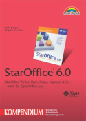

|

Allein die stattliche Anzahl von 1033 Seiten lässt vermuten, dass der Titel "Kompendium"
berechtigt ist - in der Tat fehlt kaum etwas in diesem Buch.
Nach der Einführung über die Funktionalität der Programme und der Unterschiede
zwischen StarOffice und OpenOffice.org wird löblicherweise auf die Hilfe-Funktion
eingegangen - damit bekommt der Leser später die Möglichkeit seine Probleme selbst
zu lösen. Außerdem beschreiben die Autoren den grundlegenden Umgang mit dem Paket
sowie die Anpassung der Arbeitsumgebung an die persönlichen Bedürfnisse.
Anschließend werden die Funktionen der einzelnen Programmteile genauer erläutert.
Die beiden wichtigsten Teile - die Textverarbeitung und die Tabellenkalkulation -
bekommen jeweils über 100 Seiten Platz, d.h. es finden meist auch erfahrene Anwender
Dinge, die sie noch nicht kannten. Auch die anderen Programmteile kommen nicht zu kurz.
Der Aufbau der einzelnen Teile ist logisch und auch für Einsteiger in der Regel gut
nachvollziehbar. Fortgeschrittene Anwender finden in den Tipps Möglichkeiten zur
Optimierung der Arbeit.
Nun kommen noch einige praktische Beispiele. So wird unter anderem der Entwurf eines
Logos mit Hilfe von Draw, die Erstellung eines Haushaltsbuchs mit Calc oder das Gestalten
einer Website mit Writer/Web. Außerdem sind praktische Zusatzinformationen enthalten, zum
Beispiel die aktuelle DIN-Norm bei der Erstellung des eigenen Briefpapiers oder der
Aufbau einer HTML-Seite im Quelltext bei der Gestaltung der Seite.
Im Anhang wird die StarOffice-Installation beschrieben, die genauso wie die OpenOffice.org-Installation
funktioniert, es werden Grundlagen zu Grafiken und Dateitransfer vermittelt und es sind die Tastenkombinationen
sowie die im Formeleditor vorhandenen Operatoren inkl. der richtigen Syntax aufgelistet.
Auf der beiliegenden CD sind viele Begleitmaterialien enthalten. Neben den Beispieln aus
dem Buch ist noch OpenOffice.org 1.0 sowie einige zusätzliche Vorlagen enthalten. Auch
die Offline-Versionen zweier Themenverwandter Webseiten sind enthalten.
Einen negativen Punkt muss ich noch erwähnen: das Buch enthält kaum Informationen zur
Makroprogrammierung. Das liegt daran, dass die Autoren damals keinen Experten gefunden
haben, der bereit war hier zu helfen. Da der Name Kompendium auch in diesem Bereich
etwas erwarten lässt, möchte ich das hier erwähnen.
Natürlich fehlt in so einem Buch auch der Index nicht, der sich bei stichprobenartigen Kontrollen
als sehr nützlich erwiesen hat.
Fazit: Wer bereit ist die knapp 50 Euro zu investieren und nicht hauptsächlich Makros
programmieren will findet hier sehr wertvolle Informationen. Die Zielgruppe ist sehr breit
von Einsteiger bis Fortgeschrittener. Es ist so gut wie der gesamte Buchinhalt auf OpenOffice.org
übertragbar - lediglich die sich auf Adabas beziehenden Teile muss man überspringen. Den Namen
Kompendium verdient dieses Buch auf jeden Fall.
|